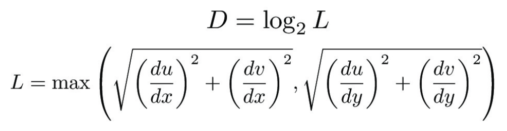

Overview
In this project, we learned how to implement various types of rasterization techniques in order to discretize a continuous photo to display on a computer screen. Although we ran into a variety of bugs involving triangle boundaries and floating point precision errors, we were able to implement a variety of sampling methods that gave our image a smoother appearance on screen. All-in-all, it was a very cool project that felt rewarding to finish.
Section I: Rasterization
Part 1: Rasterizing single-color triangles
First, we set the width and height boundaries to the min and max (x, y) values of the triangle coordinates to create a bounding box. Then, we rasterized triangles by using the line equation formula from lecture 2, slide 43:
This formula takes the dot product between the vectors V(x, y) and N(P0, P1), where P0 = (x0, y0), P1 = (x1, y1), and N is the normal vector of the two points. We calculate this for every pixel (x, y) inside our bounding box for all 3 pairs of triangle points (P0 = (x0, y0), P1 = (x1, y1)), (P0 = (x1, y1), P1 = (x2, y2)), and (P0 = (x2, y2), P1 = (x0, y0)). We then checked if all 3 L(x, y) values were either greater than or equal to 0 or less than or equal to 0, indicating that the pixel is inside the triangle. If that was true, we'd color the pixel the color given by the function statement.
The runtime of our algorithm is given by O(w * h) where w and h are the width and height of our bounding box, respectively. Since we iterate through each pixel in our bounding box and do a finite number of calculations and checks for the line test, we have O(1) runtime per pixel. Therefore, the runtime is no worse than one that checks each sample within the bounding box of the triangle.

This is interesting because although we implemented the algorithm, we still see some antialiasing!
Part 2: Antialiasing triangles
The supersampling algorithm utilizes two data structures:
- 1. rgb_framebuffer_target: the buffer of pixels that are displayed on the computer screen (dimensions width x height)
- 2. sample_buffer: the internal color sample buffer that contains all samples of the original image (dimensions width * sqrt(sample_rate) x height * sqrt(sample_rate))
To supersample, we upscaled the image by a factor of sqrt(sample_rate) and rasterized a higher-dimensional image into the sample_buffer
using the same strategy from task 1. After, the image was downsampled from the sample_buffer into the rgb_framebuffer_target by
grouping samples in the sample_buffer by sqrt(sample_size) x sqrt(sample_size) squares, then averaging the RGB values into 1 pixel that
corresponds to its location on the rgb_framebuffer_target. This involved changing rasterize_triangle to sample sqrt(sample_rate) times
at each pixel, as well as implementing functions to dynamically change the size of sample_buffer based on the sample_rate. Additionally,
we changed fill_pixel, rasterize_point, and resolve_to_framebuffer to conform with the new sample_buffer size and translate pixels
from the sample_buffer to the rgb_framebuffer_target.
Supersampling is useful because it allows us to compute the color of one pixel
by averaging the color of multiple samples within that pixel's area. Therefore, this prevents large gaps or prominent jaggies with
our image, making it appear smoother and giving the illusion of a higher-resolution photo. We antialiased our triangles by sampling
sqrt(sample_rate) times for each pixel, then averaging those values together into the rgb_framebuffer_target.

|
|
|
|
We notice these effects since increasing the supersample rate causes there to be less antialiasing since we are able to average across more samples and obtain a smoother pixel image. |
Part 3: Transforms
We were trying to make cubeman look like he's flexing his muscles, so we bent it's left arm by adding rotations and transforming accordingly so that the arm looks like it's coming out of the right place in it's socket. We also did something similar with the right arm by rotating it up, but we didn't bend it to make the photo look more interesting. We also tilted the head to give the character more personality!
Flexing Man!

Section II: Sampling
Part 4: Barycentric coordinates
Given a triangle defined by points A, B, and C and a point P(x, y) within that triangle, we can generate Barycentric coordinates (α, β, γ) for P that are proportional to its distance from the corners (A, B, C) of the triangle. Additionally, if we assign a color to each corner, Barycentric coordinates allow us to interpolate the color P by taking a weighted average of the three colors based on (α, β, γ) for P. An example of this is shown below with each point of the triangle being assigned red, green, and blue respectively.
Color Wheel!

Part 5: "Pixel sampling" for texture mapping
For every pixel, we use the same strategy from task 4 to get the Barycentric coordinates (α, β, γ) and used those values to compute the weighted (u, v) values from the given texture endpoints. Depending on user configuration, we will use one of the following methods for pixel sampling:- 1. Nearest neighbor: given a normalized coordinate (u, v), first scale them to the original coordinates of the texture map by multiplying u and v by (width - 1) and (height - 1), respectively. Then, floor u and v values to the nearest integers to find the pixel's nearest neighbor, taking the texture at those rounded values.
- 2. Bilinear Interpolation: given a normalized coordinate (u, v), first scale them to the original coordinates of the texture map by multiplying u and v by (width - 1) and (height - 1), respectively. Then, find the pixel's four nearest neighbors u00, u10, u01, and u11 (where u00 is the bottom-left neighbor and u11 is the upper-right neighbor. After, calculate the linear interpolation of (u00 and u10) and (u01 and u01), then linear interpolate both of those values together to get the texture at that pixel.

|

|

|
|
The difference between nearest neighbor and bilinear interpolation is most obvious when we supersample at 1 sample per pixel. The bilinear interpolatation image appears much smoother than the nearest neighbor image since each pixel weighs the texture of the pixels around it. The difference is less pronounced when supersampling at a rate of 16 samples per pixel because supersampling already averages values within each pixel to produce a smoother appearance (though bilinear filtering makes the smaller imperfections less pronounced).
We can expect there to be a large difference between the two methods with textures that include many fine details/features that are somewhat discretized by nearest neighbor sampling. Bilinear filtering, on the other hand, is able to average together sharp differences (like edges) and make the photo appear smoother.
Part 6: "Level sampling" with mipmaps for texture mapping
Level sampling requires the use of a mipmap. A mipmap contains multiple resolutions of the original image, where level i+1 of the mipmap has half the resolution of the previous level (level i). By default, level 0 is set to the original image. To execute level sampling, we first need to calculate the barycentric coordinates (x, y) for our current pixel based on the corners of the triangle we are drawing. After, we can use those barycentric coordinates to determine the coordinates (u, v)p the pixel (x, y) maps to on the triangle texture map. From there, we choose which level of the mipmap to sample from for each pixel based on the level filter. Let Mi denote the level mipmap we are sampling from.
- 1. Level Zero - Sample (u, v)p from mipmap M0 (level 0). To do this, we get the texel at pixel (u * M0.width, v * M0.height).
- 2. Level Nearest - To decide which level mipmap to use, we can first calculate the (u, v) coordinates for (x + 1, y) and (x, y + 1) given the process described above (denoted (u, v)x and (u, v)y respectively). After, we calculate du/dx and dv/dx from (u, v)x - (u, v)p and du/dy and dv/dy from (u, v)y - (u, v)p. The level D can be calculated from the equations listed below, and we round D to the nearest integer. After, we sample (u, v)p from mipmap MD (level D), getting the texel at pixel (u * MD.width, v * MD.height). 
- 3. Bilinear Level Interpolation - First, we calculate D using the process using the same technique from "Level Nearest"; however, we keep D as a float and don't round it. After, we use the mipmaps from levels floor(D) and ceil(D) to obtain two color values for (u, v)p. We then interpolate those two color values together based on the proportion of D between its floor and ceiling. For example, if D = 4.2, we would interpolate more from the level 4 mipmap than the level 5 mipmap, scaling by 0.8 and 0.2 respectively.
The tradeoffs between pixel sampling, level sampling, and supersampling (number of samples per pixel) are as follows:
- 1. Pixel Sampling: Pixel sampling uses less memory than the other two methods because it does not require any additional storage of information except for the texture that it draws. While the calculation required is less than the other two methods, we still calculate barycentric coordinates for each pixel and map a corresponding texture based on the pixel sampling method (nearest neighbor or bilinear interpolation). In terms of antialiasing, nearest neighbor has little-to-no smoothing whereas bilinear interpolation, although a bit slower, produces a smoother image (though fine details may be blurred a bit).
- 2. Level Sampling: Since level sampling requires the use of a mipmap, it uses 4/3rds the memory of the original texture it is trying to map. Additionally, calculating the level of the mipmap requires extra computation (where L_ZERO < L_NEAREST < L_LINEAR in terms of runtime) in addition to barycentric coordinates. In terms of antialiasing, this strategy results in a much smoother photo and reduces more antialiasing than that of pixel sampling with bilinear interpolation.
- 3. Supersampling: Supersampling requires a significant amount of memory that is dependent on its sampling rate. Specifically, a sampling rate of r requires r times more memory than the size of the original photo. Since we sample r times within each pixel, the runtime also increases proportionally to r; therefore, supersampling is the slowest of the three methods. In terms of antialiasing, it is as good as level sampling given a high enough sample rate.
Some examples of these effects are shown below on the cute doggo named Nori :D

|
|
|
|
|
Section III: Art Competition
We did not participate in this competition.